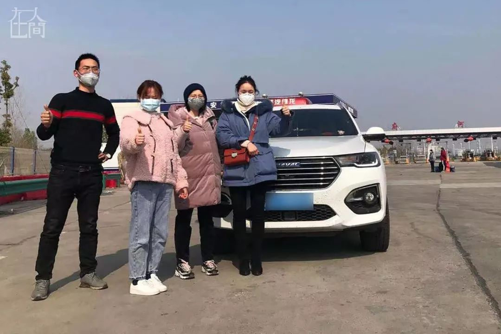

志愿接送医生的武汉司机：人可怜又渺小，我什么也做不了，只会开车
原文链接 备份链接 口述 黄晓民 采访 张瑾 联系到黄晓民时，已是 2 月 2 日晚上 8 点多，他刚协调完一批送给医院的物资回到家中。电话那头传来咳嗽声。 黄晓民，38 岁，南国地产的一名市场推广。1 月 23 日成立武汉 123 志愿 …


凤凰新闻客户端 凤凰网在人间工作室出品
我叫范曹军，今年34岁，是湖北襄阳枣阳市人。我在武汉上学、工作十多年了，武汉是我的第二故乡。
去年12月，我就开始关注华南海鲜市场零散爆发出来的疫情消息。由于工作原因，我经常在武汉市内到处跑。1月，有一次，我开车路过华南海鲜市场，发现有很多医护人员和警察、城管，市场已经被封，我意识到疫情有点儿严重了。
当天我就买了一次性医用口罩。我在武汉的朋友也都知道这个事，但由于当时政府说得很明确，不会人传人，我们几个朋友在一起时是不会戴口罩的，只有外出才会戴。
我是年前几天回到枣阳的，大年二十九，武汉封城。当时我在家里，早上起来看到消息，很懵，吓到了。就想，不是看错了吧，怎么会把整个武汉给封了？
当时我不能理解封城意味着什么。我只知道武汉是那么大的一个城市，三环线加起来有将近80多公里，开一圈下来都得一个多小时，四环线有150多公里，这还不算周边的那些区，黄陂、江夏等。
这时，我觉得事情很严重了，疫情不断升级，新闻数字爆炸式增长。武汉医护人员几天几夜不休息，直接躺在地板上睡着了，甚至还有牺牲的医护人员。
紧接着，武汉很多医院开始召集放假或休息的员工回到一线，我陆陆续续看到湖北不少县市中有很多医护人员迫切需要回到武汉。
但当时大家都把注意力集中到武汉了，没有很关注外围战线，比如说省内其他市县支援的医护人员，我们市就有许多。我想既然没人做，那我们做。
一
往年春节期间，即使没有疫情，湖北的县级市和乡镇，搭车都很不方便，何况在疫情爆发各地封城封村的情况下。
初一那天，我在老乡微信群和朋友圈发消息，号召有条件的朋友当司机志愿者，送医护人员去武汉上班。我有七八个枣阳老乡群，其中也有枣阳人在武汉的老乡群，一共两三千人左右，里面有很多医护人员，也有很多司机。
号召发出，很快就有人响应，当天夜里就组建成了25人的志愿者车队。这25个人我都没有见过面，他们基本都是私家车主，有自己的工作，但都非常热心。
但是，我是从武汉回来的，要在枣阳的家里隔离。无法出门，我就留在家里做指挥工作。我给25个司机拉了一个群。
召集车队不费事，后续组织跟具体实施的过程比较艰辛。
初二我们发了两辆车试行。我小范围宣传了一下，立马就有一个医护人员回应。她是武汉某医院的护士，现在人在枣阳，一开始医院还没有要求她们回去，但她在群里了解到武汉的情况后，主动要求回武汉支援。
刚开始这些医护人员只能零零散散自己回去。后来，武汉那边情况越发危急，越来越多的医护人员要求回去，我们就越来越忙。
一个医护人员坐了我们的车后，会把我们车队志愿者的信息发到他们的医护群，一传十十传百，后来有一些其他热心志愿者组建的省内回武汉的医护人员群，比如襄阳回武汉，会邀请我们加入群，网络慢慢就被搭建起来了。
从枣阳到武汉有300多公里，单程要3个小时。最开始，我们的司机只在枣阳，后来迅速发展到沿线跟周边县市，差不多一共13个县市。

■ 苏宏昌（制鞋厂老板），将枣阳市、随州市、云梦县、孝感市的5位医护人员送到武汉。在府河收费站，交警为他们拍照留念。
整个过程蛮辛酸的。随着疫情升级，从省里到市里，市里到县里，甚至到村里，所有的交通都封锁了。我家在农村，村里也开始在门口贴通知，登记，上报。
要想顺利协调一个医护人员，让他从村里到镇上、到市里，辗转赶到我们的会合点，这个过程当中有太多的艰辛。
有一个在武汉工作的女医生，在孝昌县一个村里要回武汉上班。出发之前我跟她沟通好要怎么走。因为我们送多了，有经验。她不知道怎么办，我就指导她，比如让医院开什么样的证明，怎么开，要不要盖章，怎么跟当地沟通。
第二天她刚开车准备出村口就被拦了，封村，不让走。她跟村里说了半天也没办法，后来我跟她村里的人解释说，我们是公益志愿者车队，我们的车已经到高速路口，要接这个医生回武汉参与抗疫。说了半天，才放她出来。
出了村没多远，她就遇到很多路被封。农村的封路都很暴力，弄个推土机，或者搞一堆土，把路整个堵死。她问我怎么办，我说你赶紧打电话，让你爸爸或者亲戚搞一个摩托车送你到孝昌县和孝感市交界处跟我们汇合。
一路上，从这个村到那村镇，从这个镇到那个镇，跨区域之后又有一道关口，被当地的交警拦住了。她跟交警解释了半天，没有用，不行，就是不能走。交警对医院的证明也不认可，说现在上面下了死命令。
她哭着问我怎么办。我想了一下，说，你在现场逐一打一遍110、120、市长热线12345或者是当地防控指挥部的电话。她打了110，110没说放行也没说不放行。弄到最后，交警被我们感动了，又看了她的相关证据，包括我们的聊天记录，确认这个人是回武汉支援，才放行。交警用他们的车载着她到高速路口跟我们车队的司机汇合。
女医生回去后还发了一个朋友圈，大意是：一路跋山涉水，翻山越岭，就是现实版的《人在囧途》，除了轮船和飞机没坐，这一路基本上所有的交通工具都用上了。
二
很多时候我就是找一张破纸，接到电话拿支笔就开始记。他的网名叫什么，人在哪里，大概什么时候出发，离他最近的高速路口在哪里，我们车子现在还有多少，能分到哪辆车，司机的电话是多少，需要几点过去汇合，走哪条路最近等。所有我们能想到的问题，我都把它考虑进去。

■ 崔巍（左二，退伍军人，自主创业），每次护送医护人员总是冲在第一个。
其实一开始不是这样的。最初由一个热心志愿者或者一个医护人员自己在群里面丢消息，我是哪个医院的，我要到哪儿，我人在哪儿，或者一个志愿者说我车在哪里，车空几个位置，要到哪儿。
这是点对点的联系，沟通效率极低，尤其在有几百人的群里，容易刷屏，让真正有需要的人看不到有用的信息。
前两次我们也是这样沟通，但第二天我就立马就改变了工作方式。我想了一个办法，由我在后台搭建枢纽，左手联系司机，右手联系医护人员。在信息确认之前，司机和医护人员彼此不联系。当我确定了双方的信息基本匹配度在90%以上，我再拉一个小群，里面有司机，我和坐这辆车的医护人员。
我会提前规划好路线，第一在哪儿接医护人员，第二接哪个医护人员。这样司机只用记住几点钟在哪个路口接哪个医护人员，比如枣阳市两个人，随州收费站有两个人。司机不用一个个联系确认医护人员的具体信息，医护人员遇到麻烦的时候不用向司机求助，只用向我求助，我会告诉他们怎么到达集合地点，司机耐心等待就可以，这样就大大提高了运送的效率。我们可以做到每一辆车几乎都满载，五座的私家车可以坐到4个医护人员，七座的商务车或者是MPV可以坐到5到6个人。
我会在群里面发司机的行程，沿途的医护人员会跟我联系。我几乎每天工作十七、八个小时，时刻盯着群里的动态，联系人，协调，设计路线。

■ 邓国涛（印刷工人），护送谷城县、宜宾市医务人员回武汉支援。
粗略统计，目前我们已经送了差不多300个医护人员。我们有将近二三十个司机，今天这几辆车，明天那几辆车，跑一天原则上休息一下，那些特别有奉献精神的就连续跑，一天跑一趟，不休息。
大部分司机是枣阳的，后来陆续有其他地方的司机加入，谷城县的，宜城的等。他们通过其他渠道找到我们，可能他们当地没有人组织，或者没有找到当地的志愿者，就找到我们这边了，我们毕竟车队大一点，信息广一些。
我们枣阳当地的一个司机，从我发起号召开始，他就积极报名。我们帮他协调村里，给他开各种证明，但是当地就是不让他出来。他天天看着群里运送医护人员的司机那么辛苦，干着急，帮不上忙，他前前后后争取了四五天，跟村里，跟镇长打电话，跟市里面协调，最终还是没有成功。每个地方出于自己的防护需要，我们能理解，不过他这种精神我挺感动的。
有个小区的保安跟司机说，你这个车开出去可以，开出去之后再也不要开回来了，那个司机很无奈，说，好，那我就不开回来了。
目前我们有两个司机退出了。不是他们自己想要退出，而是家里人担心他们的安全，他们没办法。我们也能理解。
三
这过程中也遇到过质疑。有人说你发国难财，这时候不要命了还出去跑车做生意；还有的说政府给你发补贴，一天一两千。说什么的都有。事实上我们没有一分钱报酬。
我以前做献血志愿者时也遇到过这种质疑。我是武汉“秦义无偿成分献血感召队”的一名志愿者，已经献了30多次，平均一年三次。不但自己去参加无偿献血，还要影响身边更多的人加入。
有一次我带了三四位朋友去献血，发了朋友圈。有个人说，你带这么多人过去献血，他们每个人给你多少钱？意思就是我介绍人去献血，血液中心给我发多少钱。听到这话真的心里很难受。

■ 民间车队组织者范曹军在武汉血液中心捐献血小板。
所有的服务都是无偿的，这当中没有任何利益纠葛。
当然，最开始司机们提议免费送医护人员，我考虑了一下，觉得完全免费不现实，因为一去一回600公里，那意味着随便一辆车的油费跑一趟下来就四五百块钱。这些司机都是普通工薪阶层，四五百块钱他负担得起，但是他能负担起几个四五百块呢。
我就决定象征性地收取一点费用，让这个事情能长久稳定地运行下去。枣阳到武汉市的大巴车一个座位收费100块钱，我们小车载医护人员50块。勉强保住油钱。
我从来不接触这个钱。我会跟医护人员说，你上车了，或者到了目的地之后，发到小群（每辆车都有一个小群），提醒司机收就行了。医护人员很能理解我们。这个费用我们不说，他们主动会给，而且会多给。
我们做多了，陆陆续续有些枣阳老乡，武汉的热心市民，进行捐赠，虽然不多，千百块钱，但每次司机出一次车我会给他们补50块钱的油钱，作为爱心人士对他们的一个敬意。
2月5日，车队暂停运营。这跟志愿者司机何辉去世的消息有关。虽然我们不认识他，但他就是我们身边的战友。一听到这个消息，群里就开始讨论如何做好防护。因为我们接触的人比较多，如果我们是病毒携带者的话，岂不是感染了医护人员。
我们一直没有多少防护物资。组建的时候我就跟大家说清楚了，这个事情完全靠自愿。但我会监督他们做好相应防护，比如戴好口罩，开车过程中尽量保持车内通风。出发之前要对车消一次毒，到达武汉收费站跟当地交警和志愿者接洽完之后消一次毒，返回枣阳之后再一次消毒，每辆车平均一天要消两到三次毒。
我们自始至终没有防护服，现在口罩和酒精也全部没有了，只能暂停运营。我在群里宣布了这个消息，也告诉司机，一定想尽办法筹集物资，特别感动的是，一个司机说，只要防护物资到了，我们立马就开始。
我在网上看到，有个女医生花了四天三夜骑行300多公里返回武汉的工作岗位，当时看到这个视频之后，我眼泪哗哗往下流。只有经历过这个过程的人才知道艰辛。“我不忍心看到第二个‘骑自行车回武汉上班的医生了’。”
接着，我在志愿者司机群里面写了一段话，说从今天开始想尽一切办法帮大家筹集物资，物资筹集到之后愿意继续做的自愿报名。
2月7日，我们筹到了170个一次性口罩，50个护目镜，50瓶消毒酒精，但是仍然没有防护服。傍晚我在群里号召大家2月11日重新启动车队，继续运送医护人员，已经有司机响应。
四
我记得很清楚，高中毕业那年，第一次到武汉，我跟几个同学拖着行李，从汉口火车站出来，坐803路公交车，从汉口绕一圈，再走江汉桥，然后再走到汉阳。襄阳和枣阳这边坐公交车最长不会超过半个小时，但那天我们整整坐了一个半小时才到目的地。一路上，我们就问公交车司机到了没有，到了没有，生怕坐过站，公交车司机搞烦了，就用武汉话说，到了自然会叫你们的，不会错过的。后来我们就调侃这个事儿说好划算，两块钱坐一个半小时。
这个城市很大很大，大学很多，所有的大学都很美，很有文化气息。那一年，武汉的城中村到处都是，包括繁华地段。很多外地朋友跟我开玩笑说武汉就是一个大农村，我当时就跟他们开玩笑，说，那你说对了，我们就是从农村来的。我们就很喜欢武汉，农村就农村呗，从小农村走到大农村。
来到武汉之后，我就想，先把工作稳定下来，然后要读书，上个大学。因为家里经济原因，我高中毕业之后就没读书了，后来到九州通医药集团工作。
当时公司为了帮助职工提升学历，组织大家读大学，我就主动报名了，我们就边工作边上大学。学了四年半，拿到了本科文凭。这也是我的第一份工作。这家医药公司就是在这次抗击疫情当中，正式接管湖北红十字会仓库的那家医药公司。我在那里工作了七八年，他们在医用物资的管理分发配送方面，绝对是湖北省最专业的。
我现在一家保险公司工作，在武汉生活了很多年，我很喜欢这里。
武汉其实是一座很美的城市，并不是像他们说的大农村，根本就不是。要说文化底蕴，武汉有武大，华科，211，985，一点不比国内任何一个城市差。要说风景的话，这里有5A级景区，长江大桥，黄鹤楼，还有国家级风景名胜，包括后来建的东湖绿道等等。
现在群里每天都有医护人员寻求回武汉的车辆，2月8日一天我就统计了25个人。我希望尽快筹集防护物资，开启车队。
我希望疫情早点儿过去，武汉早点儿恢复到原来的样子。如果可能，我努力工作，在武汉买套房子安个家。


新型肺炎疫情牵动人心，
《在人间》现面向全国网友征稿：
（一） 疫区影像日记
如果你身处疫区
请你用照片（视频）和文字记录
你所听闻和见到的一切
照片不少于3张
文字不少于300字
投稿方式：微信联系人间君（zairenjianliving）
（二）抗击疫情真实故事
无论你是一线医护人员、志愿者、
确诊或疑似患者及家属、已治愈出院人士等等，
如果希望讲述疫情相关经历，
请微信联系人间君（zairenjianliving）

原文链接 备份链接 口述 黄晓民 采访 张瑾 联系到黄晓民时，已是 2 月 2 日晚上 8 点多，他刚协调完一批送给医院的物资回到家中。电话那头传来咳嗽声。 黄晓民，38 岁，南国地产的一名市场推广。1 月 23 日成立武汉 123 志愿 …
原文链接 备份链接 武汉的一群车队志愿者，被当地人称作“摆渡人”。粗略估计，这一群体已超过千人。这群志愿者中，最活跃的大部分是90后，最小的是1998年出生的，他们用自己的勇气和热情化解了部分人员暂时的出行难题。然而，在病毒面前，志愿者 …
原文链接 备份链接 ********** ***** “在瘟疫面前，感谢你让我们看到了人性中的美好和善良”，“你让我们看到了一个真实的武汉。”评论中出现最多的字眼就是“真实”。***** 武汉晚上七点，空旷的街道，时不时有120急救车疾驰 …
原文链接 备份链接 作者 | 相欣 编辑 | 康晓 出品｜深网·腾讯小满工作室 欢迎下载腾讯新闻APP，阅读更多优质资讯 编者按：通过湖北各城普通民众的视角和抗疫行动，记录这一段我们永不会忘记的历史。是为抗疫日记系列之二，来自武汉支援医护 …
原文链接 备份链接 27.01.2020本文字数：1459，阅读时长大约2.5分钟 导读：“我生活在武汉，我热爱武汉。只有城市健康了，我们居民才会有舒适的小日子。” 作者 | 第一财经 刘佳 清晨6点的武汉，天还没亮，身穿黄色防护服、戴 …